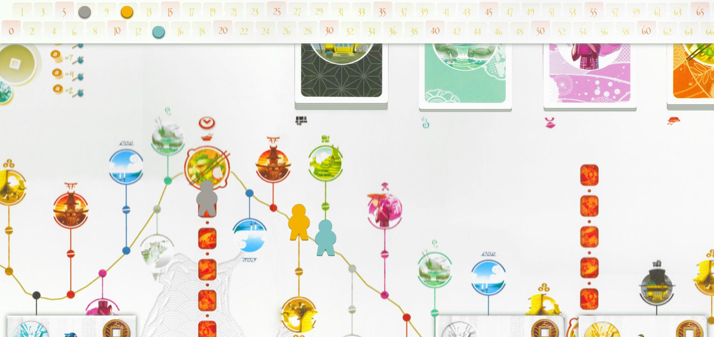
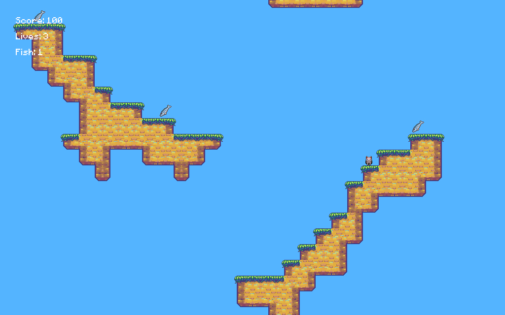
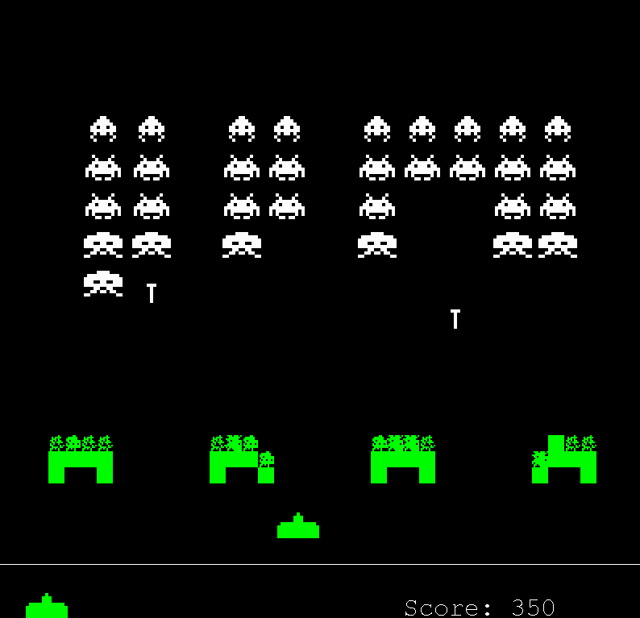
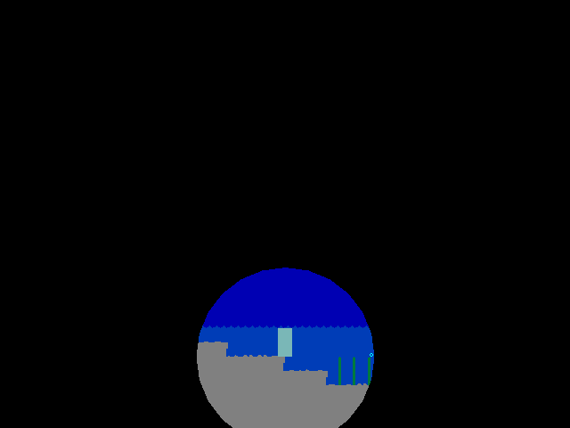
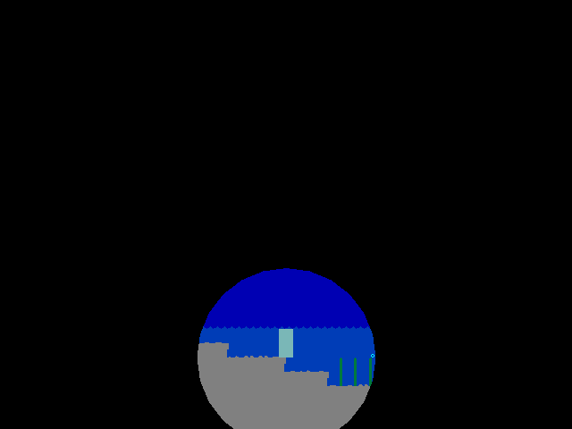

Browser version of Tokaido, the board game by by Antione Bauza.
After making Catan (below) I felt like porting
another board game, but doing it better. I decided
to do Tokaido, because it's another game I wanted to
play with my friends. It uses the same sort of structure
and logic, but much more organized and looks way better.
Graphics are by Naiiade,
and were scanned from the physical copy of the board game.
Feel free to clone it off GitHub, set up a server,
and play it with your friends.



Browser version of The Settlers of Catan, the board game by Klaus Teuber.
Due to the lack of good, reliable, online multiplayer
Catan games, I decided to make one so I could play
with my friends from afar. It is done using SCSS
and ES6 Javascript, along with NodeJS in the backend.
In addition to just Catan, it includes a chatbox
to communicate with your opponents, and will have a
playlist feature so players can share music.
The game has been finished and playable, but I hope
to someday get around to making it look better and
work smoother.
Avoid dogs, birds, spikes and more and get to the
flower!
This is a simple Mario style platformer I made for
the ISU of Grade 12 Computer Science, made over a
few weeks in class. I used C++ with SDL2 for the
graphics. I wrote all the code, though some was
based off this
tutorial. The graphics are from various Internet
sources, and the music from Incompetech.
I also created a system for turning BMP files into
levels, using different colours to represent the
different types of objects. The code for that is
included in the Github repo.
It is not quite finished yet, but the version I
had working for class is available for download.
There are some things wrong in that one, but I'll
keep the source up to date with current progress.
I hope to get my own graphics and music and polish
this up well enough to distribute some day.



You live in a world where everything is white. You
are white, the walls are white - everything. But
one day you see a spark, and it's not. With your
new discovery, travel around and see what else
the world has to hold. Bring back all the colours!
White is a smooth, relaxing, somewhat puzzling platformer.
I thought of the idea for the game a long time
ago, and had worked out an early prototype. I lost
that file though, and I left it alone for a while.
I started it up again later, just by coincidence
at the same time as the GMC Jam #13.
I submitted an early version
to that and it placed 19th overall.
After the GMC Jam was over, I went on to complete
the game. Eventually I published it, first on
GameJolt,
indieDB and
itch.io as a downloadable
game, and later as an HTML5 game on
Kongregate and
Newgrounds.
Unfortunately the HTML5 version does not run as
smoothly as the standalone executable, and so it
has lower ratings where it is published, but it was
more an experiment to try and publish it properly.
In the end it was 8 months of on and off work,
in which I created every part of the game - code,
graphics, music and sound. White is my
personal favourite of the games I've made.
Having lived in a small village, poor and bored,
you are unsatisfied with the living conditions,
and wish to go across the Chasm and get yourself
a better life in the Nobles' Land. Fix up the old
catapult and see where it takes you!
The Catapult is a short RPG, and was
created in 48 hours for Ludum Dare Ludum Dare #30.
It was made using GameMaker:Studio, and was based
off an RPG engine that I had created earlier. The
graphics I drew myself, though music and sound were
created using a random generator, all within the
two days.
You (and your house) have been teleported into a
mysterious forest. Some guy tells you that the trees
are dying, and that you have to fix them by solving
the forest spirits.
I made cat in a few days using an idea from
Orteil's game idea generator
with "cat" as the seed and sanity turned off.
It was made in GameMaker:Studio, using the same
RPG engine as The Catapult. I drew some of
the graphics, but most were taken from the Internet,
along with the sound and music.
The time has come for the animals to take over
the Manor Farm. Chase out Mr. Jones, harvest the
crops, build the windmill, and bring Animal Farm
to glory!
This was made as a grade 11 English project. The
story and much of the dialog is taken directly from
Animal Farm by George Orwell. It's an RTS,
inspired by StarCraft and Age of Empires.
I made a few of the graphics, but most were taken
from the Internet. The dialog sprites and menu music
are taken from the 1955 animated film.
Shoot down the invaders from space in this remake
of the Atari classic.
When learning Java in class, I got bored of the
regular assignments, so I made this instead. It
ended up being my summative project for the year.
The entire game was coded from scratch, though
the resources were taken from someone else's
remake.

Dave has won Employee of the Month, and a trip to
Brockville! Something is up with the train you're
taking though. See if you can figure out what's going
on.
Forks is a sidescrolling action game, mostly
story based. It was my entry to the GMC Jam #12
where it placed 16th overall. It was made by a
group of friends, including myself. I did the code,
Pearl Qiu did the graphics, Avery Vine did the
music, and Ben Hansson voiced the monsters.
Abby and Elliot's school is going on a field trip
to the forest. Abby gets bored though, and drags
Elliot off into the woods with her. Separated from
the group the must now find their way back safely.
Abby and Elliot is a sidescrolling game,
mostly based on story. It was my entry to the GMC Jam #11
where it placed 21st overall, and the first real
game that I released to the Internet. I made this
game with Pearl Qiu, who did the graphics. The
music was composed by Jack Boldick.
This game is based off of William Golding's
Lord of the Flies and created for a grade
10 English assignment. It's a collection of
minigames that are meant to prove the theme of
evil being a part of every person, whether they
know it or not. The game is a bit buggy due to
some updates to GameMaker. I took the graphics
and sound from the Internet, and the music is from
Donkey Kong Country.
It's World War II. As part of Canada's forces, you
must fight for the Allies and defeat the Axis.
I made this game for grade 10 History class. It
is a very simple platform shooter, with each level
based off of one of Canada's major conflicts. It
was coded in GameMaker, with graphics and sound
from the Internet.
Learn a bit about the things I like in this
autobiographical game.
Cam-I-Am is a collection of minigames about
me and the things I like to do. I made it for my
grade 9 English summative as part of the Book of
Life project, where each student created something,
about themselves and how they live, such as a story,
song, poem or other form of media, to send to a
First Nations school.
Collect the coins and lives, avoid the enemies.
Run around as fast as you can but don't get squared!
I made Running Squared to learn HTML5 games.
It is a very simple run around arcade game, with
not a lot to it. It only took a few days to make,
but in the end I put it on Kongregate
just for fun.
Tom's hometown is in danger. He must go on a grand
adventure full of swords and bows and magic to
get the Magic Taco so he can save his home!
Taco Quest was my first big project.
I made it mostly with the drag and drop features
of GameMaker when I was very young, so it's not
particularly impressive compared to my current
games. There are a few bugs here and there, and
the game isn't all that fun. I used the default
example graphics that came with GameMaker and some
music and sound I found online.
You're a ghost. Get the money.
The Ghost Game was the first game I ever
made. I started it at Virtual Ventures summer camp,
and finished it after. I then went on to make a
The Ghost Game 2, which I combined with
the first to make the Complete Edition that
is available for download below. It's
a very basic platformer which I made using GameMaker
and its example graphics.


 
